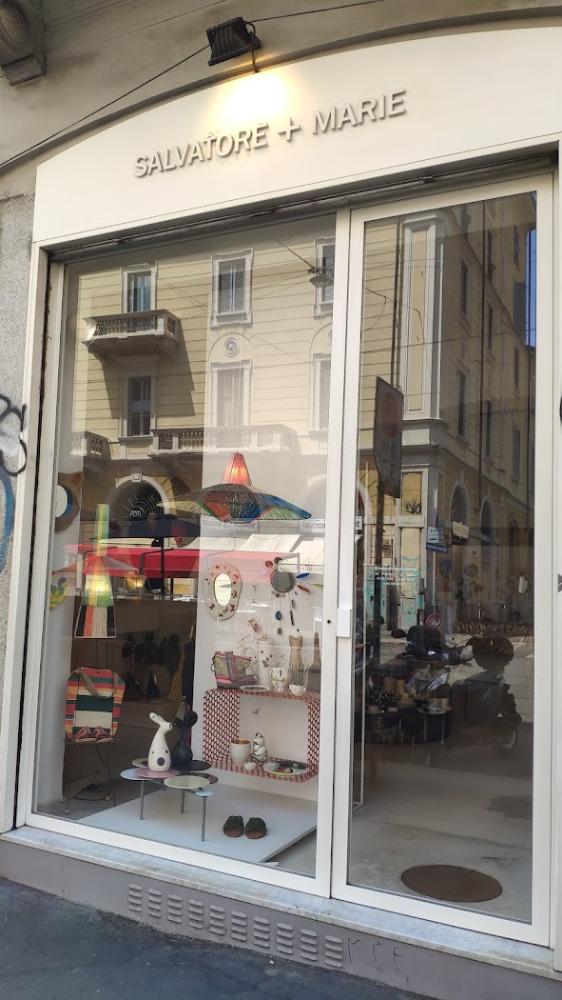
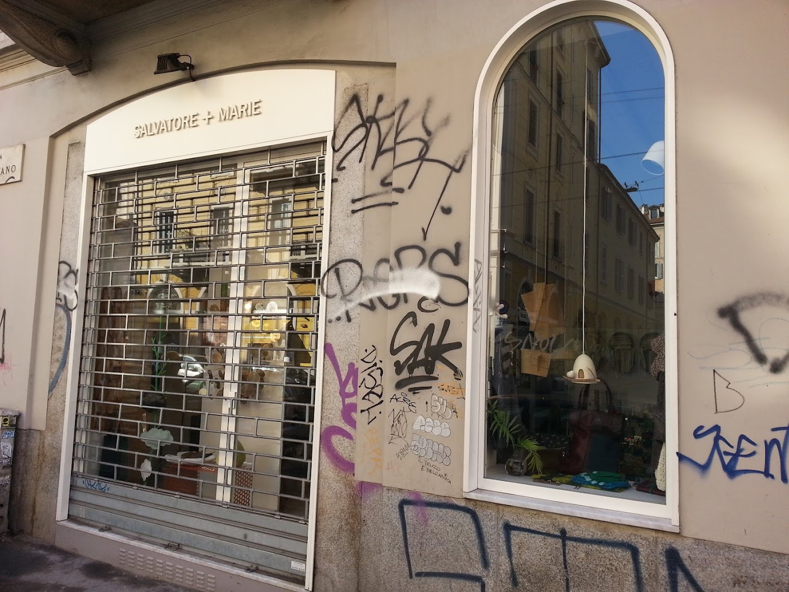

Bijoux & gioielli
Orecchini, collane e spille d'artista: resina, pietre, ceramica, ottone. Bijoux che sono piccole sculture da indossare.
Concept store · dal 1989 · Navigli, Milano
Dal 1989, ai Navigli, un negozio di moda e design come nessun altro: bijoux, abiti sartoriali, ceramiche e oggetti d'arte da indossare, scelti pezzo per pezzo da due designer. Roba che a Milano trovi solo qui.

+ 01 — La storia
Salvatore + Marie apre nel 1989 in Via Vigevano ed è da allora un punto di riferimento per chi ama capi e accessori speciali. Non una boutique qualsiasi: una collezione personale, curata a mano, dove ogni pezzo è scelto perché ha una storia.
Bijoux d'artista, ceramiche, abiti sartoriali, borse, piccoli oggetti di design. Chi entra — milanesi affezionati e viaggiatori da tutto il mondo — di solito esce con qualcosa in valigia. «Il negozio più interessante e ispirante che abbia trovato in Italia», scrivono. Noi lo chiamiamo, semplicemente, casa.
+ 02 — Cosa trovi
Orecchini, collane e spille d'artista: resina, pietre, ceramica, ottone. Bijoux che sono piccole sculture da indossare.
Capi speciali e ricercati, tessuti e stampe che non vedi altrove: kimono, giacche, camicie ricamate, abiti dal taglio unico.
Vasi, tazze, lampade e piccoli oggetti di design fatti a mano: la stessa cura che mettiamo nella moda, per la casa.
Borse tessute a mano, macramè, cappelli, cinture, foulard: l'accessorio che cambia tutto, e che ricorderai.
Il filo che tiene insieme tutto: pezzi scelti per la loro anima, non per la stagione. Da regalare, o da tenersi stretti.
Le collezioni cambiano di continuo: quello che vedi oggi domani potrebbe non esserci più. Seguici su Instagram per le novità.
Seguici su Instagram+ 03 — La vetrina
La vetrina di Salvatore + Marie è quasi un'installazione: colori, forme e oggetti che cambiano con le stagioni e con l'estro del momento. Passi davanti, ti fermi, entri. Funziona così da più di trent'anni.
+ 04 — Recensioni
“Most interesting and inspiring store I came across in Italy, highly recommend.”
Angela P. · Google
“An absolute gem of a shop. Beautiful, unique pieces. Customer service was fabulous. Will definitely be back!”
Claire G. · Google
“Da sempre un punto di riferimento in città per chi ama capi di abbigliamento speciali e accessori davvero unici, bijoux compresi. Bravi!”
T. N. · Google
Recensioni reali riportate testualmente da Google.
+ 05 — Dove siamo
| Lunedì | Chiuso |
|---|---|
| Martedì | 10:30–13 · 15:30–19:30 |
| Mercoledì | 10:30–13 · 15:30–19:30 |
| Giovedì | 10:30–13 · 15:30–19:30 |
| Venerdì | 10:30–13 · 15:30–19:30 |
| Sabato | 10:30–13 · 15:30–19:30 |
| Domenica | Chiuso |

La mappa è di Google: aprendola, Google riceve il tuo indirizzo IP e può usare i suoi cookie.
+ 06 — Domande frequenti
Bijoux e gioielli artigianali, abbigliamento sartoriale, ceramiche e oggetti di design, borse e accessori: pezzi speciali e unici, scelti da due designer. Un negozio di moda e design, non una catena.
Via Vigevano 33, ai Navigli. Metro Porta Genova (M2) a pochi minuti e tram 10 lungo Via Vigevano.
Da martedì a sabato: 10:30–13:00 e 15:30–19:30. Lunedì e domenica chiuso.
Dal 1989: siamo un punto di riferimento dei Navigli per chi cerca capi e accessori davvero unici.
Il modo più veloce è scriverci in DM su Instagram (@salvatoremarieshop). Puoi anche chiamarci allo 02 8942 2152 negli orari di apertura o scrivere a salvatoremarie@faswebnet.it.